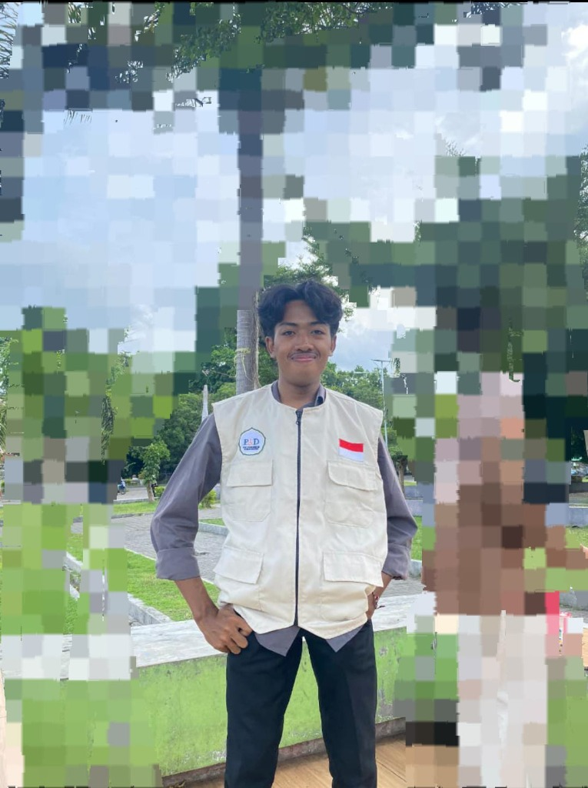

Halo, Saya
M. Ilham Ramdani
Mahasiswa Universitas Hamzanwadi jurusan Sistem Informasi. Saya adalah pribadi yang senang dengan hal hal yang berkaitan dengan bisnis, dan saya suka berteman atau partner dengan orang yang suka berbisnis
Pendidikan
Universitas Hamzanwadi
S1 Sistem Informasi (2023 - Sekarang)
MA NWDI Lepak
Lulusan Tahun 2024
Keahlian
Bernegosiasi
Berbisnis
Mengelola keuangan
publik speaking
Pengalaman
Menjalankan sebuah usaha
sebagai sales es krim kelilig sejak tahun 2024
Menjadi Bendahara Osis
di SMPN 1 Sakra tahun 2019-2020 dan di MA NWDI Lepak tahun 2022-2023
Hobi
- Badminton
- Mancing
- Outdoor (petualang)
Sosial Media
milhamramdani2511@gmail.com
087850214715
@Ilhmdn.i
@Sagiboys25